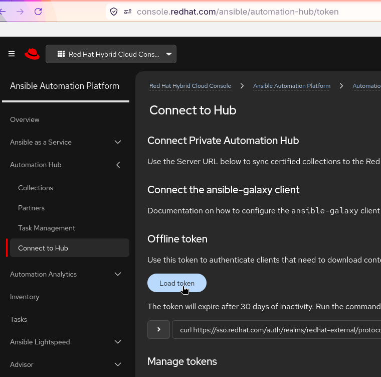
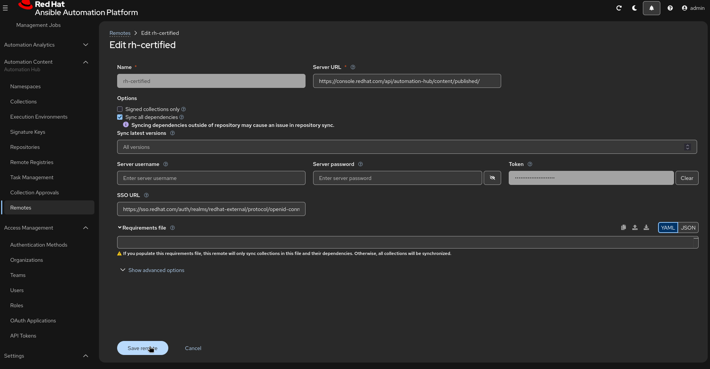
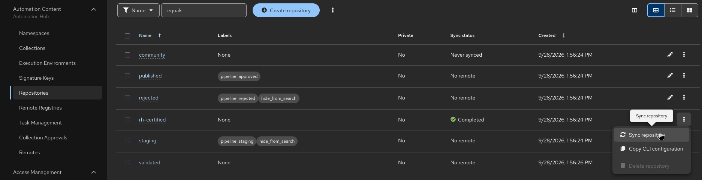

Chapter 4: Synchronizing Red Hat Certified Automation Content
In this lab, you will configure your Private Automation Hub to sync Red Hat Certified Content collections directly from cloud.redhat.com (Console Red Hat).
| In most enterprise production environments, this integration is pre-configured by system administrators during deployment. In this lab environment, you will walk through obtaining the required API token and setting up the remote repository manually to understand how the synchronization mechanism works. |
Step 1: Obtain the API Token from Red Hat Cloud
To allow Private Automation Hub to securely pull content from Red Hat’s hosted Automation Hub, you need an API authentication token.
-
Open a web browser and navigate to cloud.redhat.com.
-
Log in with your Red Hat credentials.
-
Navigate to Ansible Automation Platform > Automation Hub > Connect to Hub.
-
Under the Offline Token / Load Token section, click Get Token (or Load Token).

-
Copy the generated API token to your clipboard for use in the next step.
Step 2: Configure the Remote Repository in Private Automation Hub
Now that you have the API token, update the remote repository configuration on your local Private Automation Hub instance.
-
Open a new browser tab and log in to your Automation Content interface as an administrator.
-
In the left navigation menu, expand Repository Management and select Remote.
-
Locate the
rh-certifiedremote entry in the repository list, click the Options menu (⋮) next to it, and select Edit. -
Update the following fields:
-
Token: Paste the API token you copied from
cloud.redhat.comin Step 1.
-
-
Click Save.
Step 3: Trigger Content Synchronization
Once the token and URL are configured, pull the certified collection metadata and artifacts into your local environment.
-
On the Remotes page, locate the
rh-certifiedrepository again. -
Click the Options menu (⋮) and select Sync.

-
Navigate to Task Management (under Administration) to monitor the progress of the synchronization job.
-
Once the status displays Completed, navigate to Collections > Red Hat Certified in the navigation menu to verify that certified content collections are now populated and accessible locally.